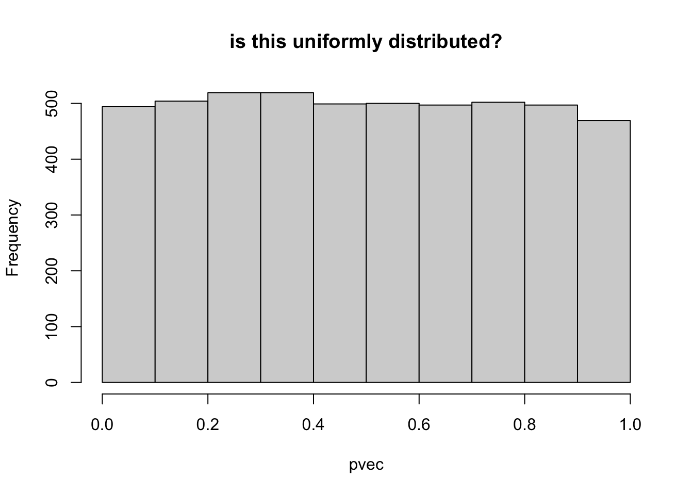

Show the code
nsim = 5000
set.seed(2021021001)
zvec = rnorm(5000, mean=0, sd=1)Haky Im
April 13, 2022
Given one of the statistics in a GWAS (Z-score, P-value, or chi2), calculate the others.
\[Y = \beta \cdot X + \epsilon\] GWAS summary statistics will contain an estimate of the regression coefficient \(\hat\beta\) and its standard error \(\text{se}(\hat\beta)\) for each SNP in the GWAS.
We distinguish the true \(\beta\) from the estimated value \(\hat\beta\) using a hat.
\[ Z = \frac{\hat\beta}{\text{se}(\hat\beta)}\] \[Z \approx N(0,1) ~~~~~~ \text{as } n \rightarrow \infty\]
\[Z^2 \sim \chi^2_\text{df=1}\]
Under the null, the squared of the Z-score follows a \(\chi^2\) distribution with 1 degree of freedom.
\[P = \text{pnorm}(-|Z|) * 2\]
From the p-value, we can calculate the magnitude of the Z-score but the sign is lost. So the Z-score has more information than the p-value.
\[|Z| = |\text{qnorm}(P/2)|\]
\[ \chi^2 = \text{qnorm}(P/2)^2 \]
Let’s simulate zscore vector under the null hypothesis.
Calculate the p-value (probability that a normal r.v. will be as large or larger in magnitude than the |zscore|

Asymptotic two-sample Kolmogorov-Smirnov test
data: z2vec and chi2vec
D = 0.019, p-value = 0.3275
alternative hypothesis: two-sided
Asymptotic two-sample Kolmogorov-Smirnov test
data: chi2vec and chi2vec_2
D = 0.0158, p-value = 0.5605
alternative hypothesis: two-sidedSometimes you get the p-value instead of the zscore, you can generate chi2 by inverting the relationship.
---
title: How to calculate Z-score, P-value, Chi2 stat from GWAS
author: Haky Im
date: '2022-04-13'
---
::: {.callout-tip}
## Summary
Given one of the statistics in a GWAS (Z-score, P-value, or chi2), calculate the others.
:::
## Calculate Zscore, p-value, Chi2 statistics using GWAS summary statistics
$$Y = \beta \cdot X + \epsilon$$
GWAS summary statistics will contain an estimate of the regression coefficient $\hat\beta$ and its standard error $\text{se}(\hat\beta)$ for each SNP in the GWAS.
We distinguish the true $\beta$ from the estimated value $\hat\beta$ using a hat.
## Z-score
$$ Z = \frac{\hat\beta}{\text{se}(\hat\beta)}$$
$$Z \approx N(0,1) ~~~~~~ \text{as } n \rightarrow \infty$$
## Z to Chi2 statistic
$$Z^2 \sim \chi^2_\text{df=1}$$
Under the null, the squared of the Z-score follows a $\chi^2$ distribution with 1 degree of freedom.
## Z to P-value
$$P = \text{pnorm}(-|Z|) * 2$$
## P to Z
From the p-value, we can calculate the magnitude of the Z-score but the sign is lost. So the Z-score has more information than the p-value.
$$|Z| = |\text{qnorm}(P/2)|$$
## P to Chi2
$$ \chi^2 = \text{qnorm}(P/2)^2 $$
-------
## Simulations
Let's simulate zscore vector under the null hypothesis.
```{r}
nsim = 5000
set.seed(2021021001)
zvec = rnorm(5000, mean=0, sd=1)
```
Calculate the p-value (probability that a normal r.v. will be as large or larger in magnitude than the |zscore|
```{r}
pvec = pnorm(-abs(zvec)) * 2 ## two-tailed
## check pvec is uniformly distributed
hist(pvec,main="is this uniformly distributed?")
## remember that if square the a normal r.v. you get chi2 r.v. with one degree of freedom
z2vec = zvec^2
## compare with chi2 rv. with 1 degree of freedom by simulating chi2,1 and qqplot
chi2vec = rchisq(nsim,df=1)
qqplot(chi2vec,z2vec,main="compare of zscore^2 and a chi2 r.v."); abline(0,1)
```
```{r}
## test whether the distributions of z2vec and chi2vec are different using the Kologorov Smirnov test
ks.test(z2vec,chi2vec)
```
```{r}
## for reference, let's compare two chi2,1 r.v.'s qqplot
chi2vec_2 = rchisq(nsim,df=1)
qqplot(chi2vec,chi2vec_2,main="qqplot of two chi2,1 r.v."); abline(0,1)
ks.test(chi2vec,chi2vec_2)
```
> Sometimes you get the p-value instead of the zscore, you can generate chi2 by inverting the relationship.
```{r}
chi2vec_from_p = qnorm(pvec / 2)^2
qqplot(chi2vec,chi2vec_from_p,main="chi2 from pvalue vs chi2 r.v."); abline(0,1)
```